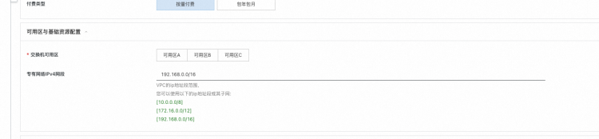
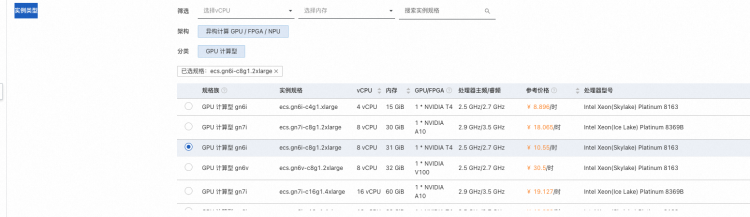
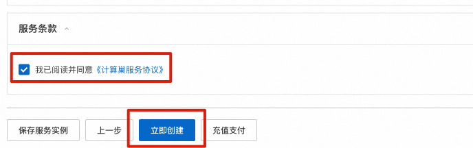
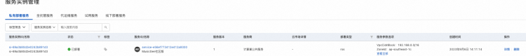
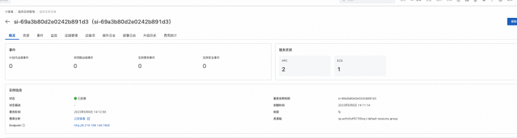
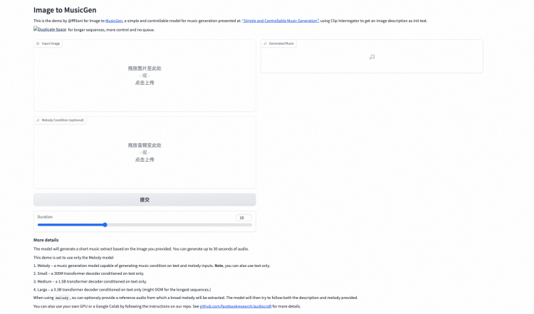
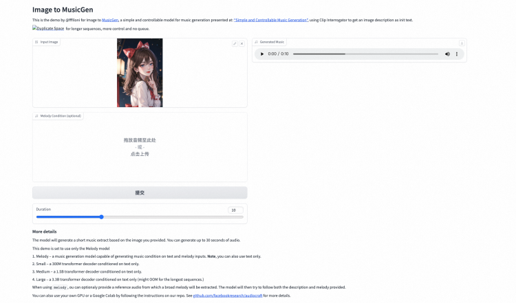

MusicGen社区版
概述
MusicGen是基于AudioCraft库开发的用于生成高质量音频的大模型。是一种简单、可控的音乐生成模型，能在给定文本描述的情况下生成高质量的音乐。MusicGen可以通过有效的码本交错策略，用单阶段语言模型生成一致的音乐，并且可以进行文本和旋律条件生成。
实例说明
MusicGen基于社区开源版本部署，参考源码audiocraft。实例规格套餐如下：
| 规格族 | vCPU与内存 | 系统盘 |
|---|---|---|
| ecs.gn6i-* | T4 GPU 计算型 | ESSD云盘 60GiB PL0 |
| ecs.gn7i-* | T4 GPU 计算型 | ESSD云盘 60GiB PL0 |
说明
根据您的实例规格和地域的不同，音乐生成的过程可能会耗时几分钟到十几分钟不等，请点击提交后耐心等候
部署流程
0.准备工作
在正式开始使用前，您需要一个阿里云账号，对ECS、VPC等资源进行访问和创建操作。 - 若您使用个人账号，可以直接创建服务实例 - 若您使用RAM用户创建服务实例，且是第一次使用阿里云计算巢 - - 需要在创建服务实例前，对使用的RAM用户的账号添加相应资源的权限。添加RAM权限的详细操作，请参见为RAM用户授权。所需权限如下表所示。 - - 且需要授权创建关联角色，参考下图，选中 同意授权并创建关联角色
| 权限策略名称 | 备注 |
|---|---|
| AliyunECSFullAccess | 管理云服务器服务（ECS）的权限 |
| AliyunVPCFullAccess | 管理专有网络（VPC）的权限 |
| AliyunROSFullAccess | 管理资源编排服务（ROS）的权限 |
| AliyunComputeNestUserFullAccess | 管理计算巢服务（ComputeNest）的用户侧权限 |
1.部署入口
您可以在阿里云登录 - 欢迎登录阿里云，安全稳定的云计算服务平台阿里云计算巢自行搜索，也可以通过下述部署链接快速到达。
2.创建服务
2.1 参数列表
您在创建服务实例的过程中，需要配置服务实例信息的参数列表，具体如下：
| 参数组 | 参数项 | 示例 | 说明 |
|---|---|---|---|
| 服务实例名称 | N/A | MusicGen-mc64 | 实例的名称 |
| 地域 | N/A | 新加坡 | 选中服务实例的地域，建议就近选中，以获取更好的网络延时。 |
| 付费类型配置 | 付费类型 | 按量付费 | N/A |
| 可用区与基础资源配置 | 交换机子网网段 | 192.168.1.0/24 | 交换机子网网段必须属于专有网络IPV4子网网段。 |
| 可用区与基础资源配置 | 交换机可用区 | 可用区I | 地域下的不同可用区域，确保实例非空。 |
| 可用区与基础资源配置 | 专有网络IPV4网段 | 192.168.0.0/16 | VPC的ip地址段范围，您可以使用以下的ip地址段或其子网:10.0.0.0/8,172.16.0.0/12,192.168.0.0/16 |
| 服务实例配置 | 实例类型 | ecs.gn6i-c8g1.2xlarge | 选择T4 GPU套餐规格或自定义套餐规格 |
| 服务实例配置 | 系统盘空间 | 100 | 系统盘大小，最大可设置为500，最小为60 |
| 服务实例配置 | 实例密码 | ** | 设置实例密码。必须包含三项（大写字母、小写字母、数字、 ()`~!@#$%^&*_-+={}[]:;'<>,.?/ 中的特殊符号）。 |
2.2 具体步骤
您可以在阿里云计算巢自行搜索，也可以通过下述部署链接快速到达。 创建服务按如下步骤进行，参考下图： - 填写实例名称，如“MusicGen-mc64” - 选择地域，如“新加坡” - 选择付费类型 - 选择交换机可用区 - 编辑专有网络IPV4网段，有三个网段可供您选择

- 编辑交换机子网网段，交换机子网网段需要属于专有网络IPV4网段
- 选择实例类型，我们为您设置了默认值。如果列表都是灰色无法选择，请更换一个可用区或更换另一个地域

- 编辑系统盘空间，最少需要60G，最大可设置为500G
- 编辑实例密码
- 点击下一步，进入订单确认页面
- 勾选“权限确认”和“服务条款”中的复选框
- 点击“立即创建”

3.启动MusicGen服务
- 在“服务实例管理”页面等待“部署状态”变为“已部署”。

- 点击该服务实例可进入服务实例详情。
- 点击Endpoint

- 进入编辑界面，您可以在imput image里上传图片

- 点击提交，在右侧即可生成音乐

- 您可以调节Duration来控制生成音乐的长度，最多可生成30秒
最后，请尽情发挥你的想象力试玩吧。有任何想法或建议或者合作需求，请联系我们～～～
© 2009-2022 Aliyun.com 版权所有